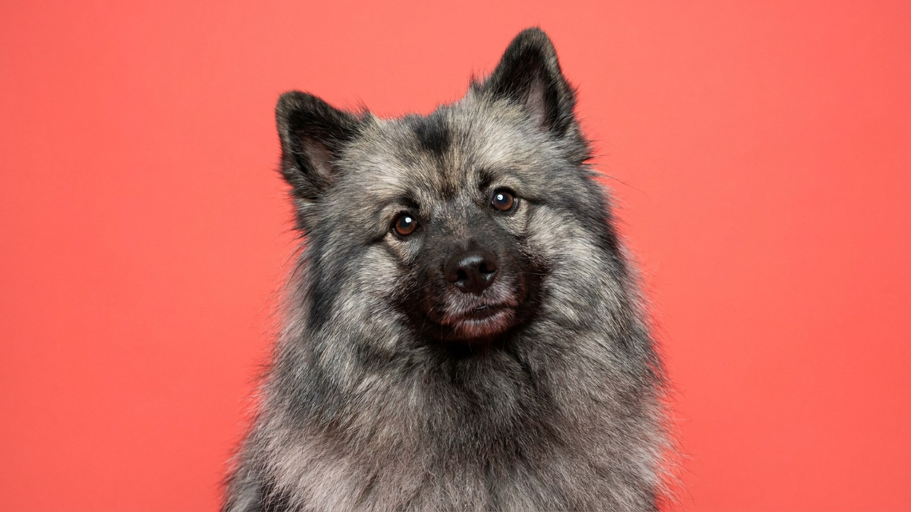

Кеесхонд смотрит на вас с достоинством: пышный воротник, тёмные «очки» вокруг глаз, осанка, будто он знает что-то важное. Нидерландские баржевики держали вольфшпица на борту именно затем, чтобы тот лаял - громко и по любому поводу. Охранять груз он не умел, зато будил команду исправно. Если вы живёте в квартире с тонкими стенами и чуткими соседями, этот нюанс стоит знать заранее.
🐾 У вас кеесхонд?
AnimaLife соберёт уход под породу: к каким болезням есть склонность, что проверять по возрасту, чем кормить и когда пора к врачу. Бесплатно, прямо в мессенджере.
Собрать план ухода → Собрать в MAX →
У вас iPhone? AnimaLife есть в App Store
Кеесхонд привязывается к семье крепко - разлука больше пяти-шести часов даётся ему тяжело. Собака социальная, любит детей, в меру ладит с другими питомцами. Незнакомцев не атакует, но и с распростёртыми объятиями не встречает: сначала наблюдает, потом решает.
Голос у вольфшпица поставлен на оповещение: шорох за дверью, курьер в подъезде, пролетевшая мимо окна птица. Лаять - работа, которую порода выполняла три века, а не склонность к агрессии. Лай поддаётся коррекции через занятия, но полностью не исчезает. Команды «тихо» кеесхонд обучается охотно, особенно если учёба построена на похвале и лакомстве, а не на окрике.
По энергии кеесхонд - средний уровень. Двух прогулок по 40-50 минут в день достаточно, если в перерывах есть игра дома. Порода адаптируется к квартире при одном условии: её не оставляют скучать. Скука превращается в лай и порчу вещей быстрее, чем у большинства шпицев.
Вольфшпиц хорошо учится - запоминает базовые команды за несколько сессий. Аджилити, нюхательные игры, апортировка держат его занятым физически и ментально. Собака ориентирована на контакт с хозяином, одиночество переносит хуже физической усталости.
Шерсть у кеесхонда двухслойная: жёсткий остевой волос и плотный пуховый подшёрсток. Два раза в год порода линяет основательно: комки шерсти появляются везде. В остальное время достаточно расчёсывать собаку два-три раза в неделю - пуходёркой и металлическим гребнем. Колтуны образуются за ушами, в паховых складках и в «штанах» задних лап: эти места проверяйте первыми.
Стричь кеесхонда не нужно - порода этого не требует. Мыть можно раз в три-четыре месяца или по необходимости. Сушить после купания нужно полностью: влажный подшёрсток долго не просыхает сам и может вызвать раздражение кожи. По вопросам ухода за кожей и шерстью обсудите детали с ветеринаром.
Кеесхонд хорош для семей с детьми и для людей, которые проводят большую часть дня дома. Плохо подходит тем, кто много путешествует или работает на длинных сменах. В квартире живёт комфортно при условии регулярных прогулок.
При выборе щенка вольфшпица смотрите на несколько вещей:
Среднее здоровье породы неплохое: кеесхонды живут 12-15 лет. Плановые осмотры у ветеринара раз в год и своевременная вакцинация - базовый минимум. Вопросы профилактики обсуждайте с ветеринаром под конкретного питомца.
Материал носит информационный характер и не заменяет очную консультацию ветеринара.
🐾 Ваш питомец — кеесхонд?
Заведите профиль в AnimaLife: приложение запомнит породу, возраст и вес и будет подсказывать по уходу именно для неё. Вопросы AI-ветеринару — круглосуточно и бесплатно.
Завести профиль → Завести в MAX →
У вас iPhone? AnimaLife есть в App Store
🐾 Понравился разбор?
Подпишитесь на канал — каждый день разбираем по одному тревожному симптому у кошек и собак: что в пределах нормы, а когда пора к врачу. Подпишитесь, чтобы не пропустить разбор, который может спасти здоровье вашего питомца.